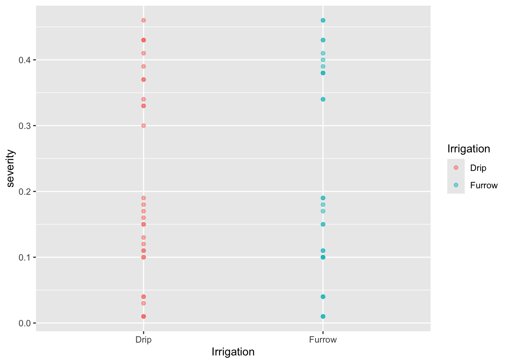
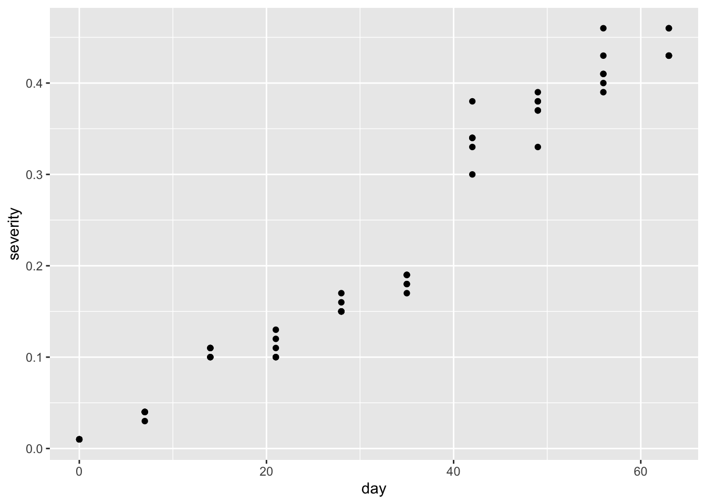
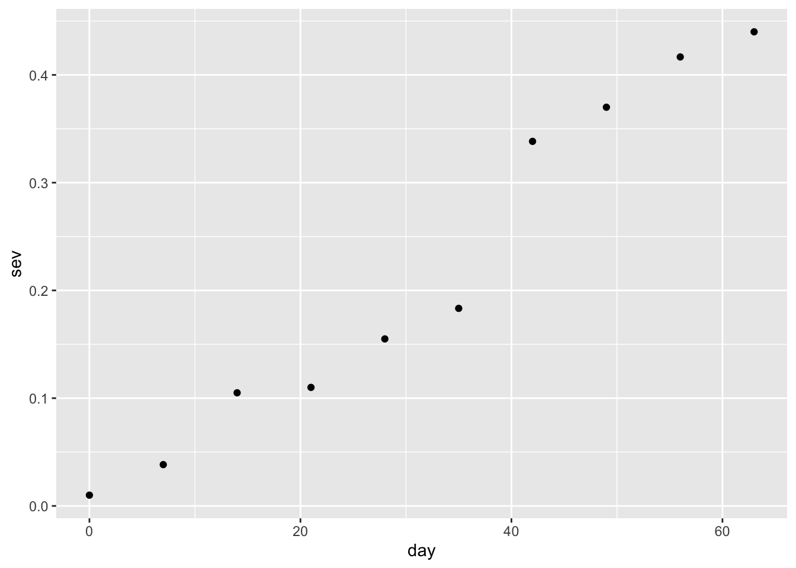
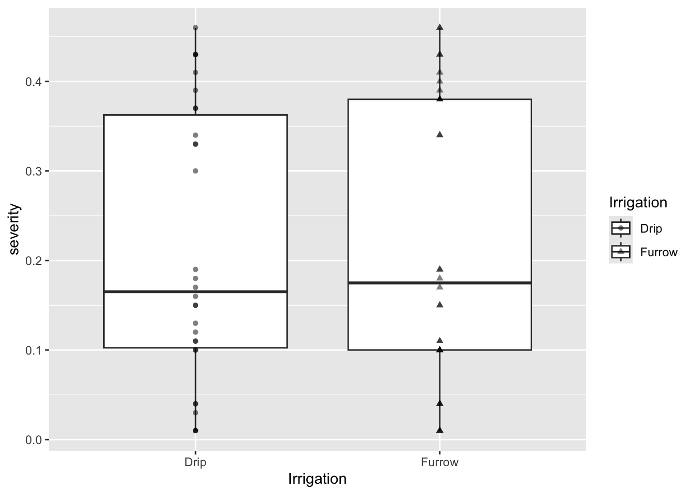
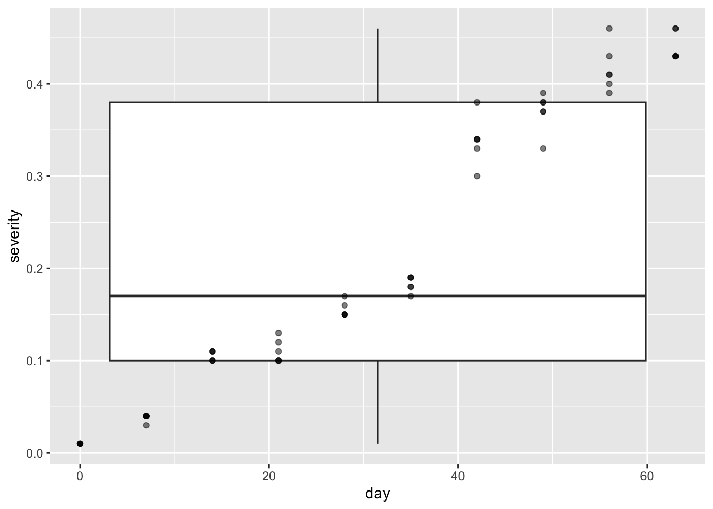
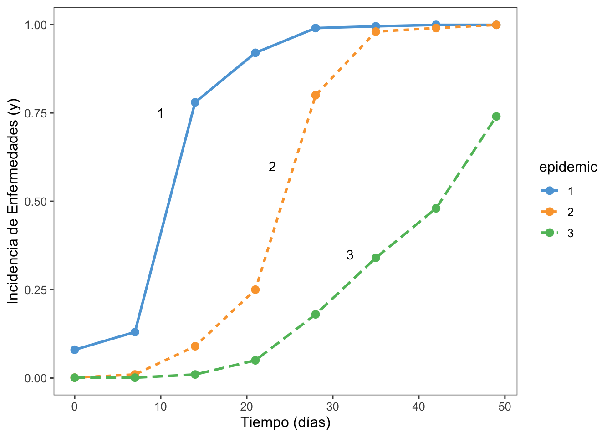

El paquete ggplot2 es fundamental en R para la visualización de datos, ofreciendo herramientas poderosas para crear gráficos estéticamente atractivos y claros. Puede ser cargado tanto de manera independiente como como parte del conjunto de paquetes tidyverse, que facilita el flujo de trabajo en análisis de datos. Para iniciar la creación de visualizaciones con ggplot2, se utiliza la función ggplot, que permite definir la estructura básica del gráfico y especificar los mapeos estéticos entre los datos y los elementos visuales del gráfico.
Codigo
library(datapasta) # Para facilitar la importación de datos desde el portapapeleslibrary(r4pde) # Paquete específico para realizar ajustes de modeloslibrary(janitor) # Para operaciones de limpieza y manipulación de datoslibrary(gsheet) # Para acceder y manipular hojas de cálculo de Google Sheetslibrary(googlesheets4) # Para interactuar con Google Sheets directamente desde Rlibrary(ggplot2) # Para visualizaciones gráficas avanzadaslibrary(tidyverse)
Importar datos
Cargar los datos desde cualquier origen para empezar a visualizar usando ggplot
Codigo
# Cargar los datos desde el archivo CSVmg <-read_csv("dados-diversos.csv")
Creación de Gráficos con ggplot
En ggplot2, los gráficos se construyen en capas, usando el operador + para añadir cada capa al gráfico. Se utiliza el operador pipe (%>% o |>) para encadenar comandos de manera eficiente.
Gráfico de Puntos
Para crear un gráfico de dispersión con puntos translúcidos:
Codigo
mg %>%ggplot(aes(Irrigation, severity, color = Irrigation)) +geom_point(alpha =0.5)

ggplot(): Inicializa un objeto de gráfico en ggplot2 con los datos especificados y los mapeos estéticos.
geom_point(): Agrega puntos al gráfico con transparencia controlada por alpha.
Gráfico de Puntos con Formas Diferentes
Para usar formas diferentes según la variable Irrigation:
facet_wrap(): Divide el gráfico en múltiples paneles según la variable rep, facilitando la comparación entre diferentes grupos.
Otras Funciones
Codigo
# Selección de columnas y gráfico de puntosmg %>%select(Irrigation, severity) %>%ggplot(aes(Irrigation, severity, shape = Irrigation)) +geom_point(alpha =0.5)
Codigo
# Gráfico de cajas y puntosmg %>%select(day, severity) %>%ggplot(aes(day, severity)) +geom_point()

Codigo
# Agrupación por día y gráfico de puntosmg %>%select(day, rep, severity) %>%group_by(day) %>%summarise(sev =mean(severity)) %>%ggplot(aes(day, sev)) +geom_point()

Gráfico de Cajas y Puntos
Codigo
# Gráfico de cajas, puntos y cambio de variable a daymg %>%select(Irrigation, severity) %>%ggplot(aes(Irrigation, severity, shape = Irrigation)) +geom_boxplot() +geom_point(alpha =0.5)

Codigo
# Cambio de variable a day y gráfico de cajasmg %>%select(day, severity) %>%ggplot(aes(day, severity)) +geom_boxplot() +geom_point(alpha =0.5)

Codigo
# Separación por grupomg %>%select(day, severity) %>%ggplot(aes(day, severity, group = day)) +geom_boxplot() +geom_point()
select(): Se utiliza para seleccionar columnas específicas del data frame antes de pasarlo a ggplot().
group_by() y summarise(): Agrupa los datos por una variable (day en este caso) y calcula un resumen estadístico (mean(severity)).
geom_boxplot(): Crea gráficos de cajas y bigotes para visualizar la distribución de los datos.
geom_point(): Añade puntos a los gráficos de cajas para mostrar los valores individuales.
Este script proporciona un conjunto completo de comandos para visualizar datos utilizando ggplot2 en R, utilizando diversas técnicas gráficas como gráficos de puntos, líneas, facetas y gráficos de cajas con puntos superpuestos. Cada función y operador se adapta para mostrar y explorar datos de manera efectiva según los requisitos específicos del análisis.
Ejemplo
1. Carga de Paquetes
Codigo
library(datapasta) # Para facilitar la importación de datos desde el portapapeleslibrary(r4pde) # Paquete específico para realizar ajustes de modeloslibrary(janitor) # Para operaciones de limpieza y manipulación de datoslibrary(gsheet) # Para acceder y manipular hojas de cálculo de Google Sheetslibrary(googlesheets4) # Para interactuar con Google Sheets directamente desde Rlibrary(ggplot2) # Para visualizaciones gráficas avanzadaslibrary(ggthemes) #Para visualización de temas de graficos asociados a ggplot
Se crea un dataframe pepper utilizando tibble::tribble con datos de incidencia de enfermedades en diferentes días (t), para tres tipos diferentes de enfermedades representadas por las columnas 1, 2 y 3.
pivot_longer: Del paquete tidyr, esta función reorganiza el dataframe pepper de un formato ancho a uno largo, donde cada fila ahora representa una observación única de incidencia (inc) para cada día (t) y tipo de enfermedad (epidemic).
ggplot: Crea un gráfico utilizando los datos transformados pepper_dat. Utiliza diferentes estilos y formas para representar cada tipo de enfermedad a lo largo del tiempo (t).
6. Anotaciones en el Gráfico con annotate
Codigo
pepper_dat |>ggplot(aes(t, inc, linetype = epidemic, shape = epidemic, group = epidemic, color=epidemic)) +theme_few() +scale_color_few() +geom_line(linewidth =1) +geom_point(size =3, shape =16) +annotate(geom ="text", x =10, y =0.75, label ="1") +annotate(geom ="text", x =23, y =0.6, label ="2") +annotate(geom ="text", x =32, y =0.35, label ="3") +labs(y ="Incidencia de Enfermedades (y)",x ="Tiempo (días)")

annotate: Esta función añade etiquetas de texto (label) a puntos específicos del gráfico (x y y), indicando momentos clave o valores importantes en la serie temporal de incidencia de enfermedades.
facet_wrap: se usa para crear una cuadrícula de gráficos, donde cada subgráfico representa un subconjunto de los datos. Esto se logra especificando una fórmula con la variable según la cual se desea dividir los datos.
Parámetros Importantes
~ factor_var: La variable categórica por la cual se desea dividir los datos.
ncol: Especifica el número de columnas en la cuadrícula de facetas.
nrow: Especifica el número de filas en la cuadrícula de facetas.
scales: Permite ajustar las escalas de los ejes. "fixed" (por defecto, las mismas escalas para todos los subgráficos), "free"(escalas independientes para cada subgráfico), "free_x" (eje x independiente) "free_y" (eje y independiente).
Aprendizaje del día
Este script utiliza paquetes como tidyr, ggplot2, y DT para importar, manipular, visualizar y presentar datos de incidencia de enfermedades en pimientos de manera efectiva y visualmente atractiva. Cada paso está diseñado para optimizar el análisis y la comprensión de los datos, facilitando la interpretación de tendencias y patrones en la incidencia de enfermedades a lo largo del tiempo.
Source Code
---title: "Visualización de Datos con ggplot"---El paquete ggplot2 es fundamental en R para la visualización de datos, ofreciendo herramientas poderosas para crear gráficos estéticamente atractivos y claros. Puede ser cargado tanto de manera independiente como como parte del conjunto de paquetes tidyverse, que facilita el flujo de trabajo en análisis de datos. Para iniciar la creación de visualizaciones con ggplot2, se utiliza la función ggplot, que permite definir la estructura básica del gráfico y especificar los mapeos estéticos entre los datos y los elementos visuales del gráfico.```{r message=FALSE, warning=FALSE}library(datapasta) # Para facilitar la importación de datos desde el portapapeleslibrary(r4pde) # Paquete específico para realizar ajustes de modeloslibrary(janitor) # Para operaciones de limpieza y manipulación de datoslibrary(gsheet) # Para acceder y manipular hojas de cálculo de Google Sheetslibrary(googlesheets4) # Para interactuar con Google Sheets directamente desde Rlibrary(ggplot2) # Para visualizaciones gráficas avanzadaslibrary(tidyverse)```## Importar datosCargar los datos desde cualquier origen para empezar a visualizar usando ggplot```{r}# Cargar los datos desde el archivo CSVmg <-read_csv("dados-diversos.csv")```## Creación de Gráficos con ggplotEn `ggplot2`, los gráficos se construyen en capas, usando el operador `+` para añadir cada capa al gráfico. Se utiliza el operador pipe (`%>%` o ` |>`) para encadenar comandos de manera eficiente.### Gráfico de PuntosPara crear un gráfico de dispersión con puntos translúcidos:```{r}mg %>%ggplot(aes(Irrigation, severity, color = Irrigation)) +geom_point(alpha =0.5)```- **`ggplot()`**: Inicializa un objeto de gráfico en `ggplot2` con los datos especificados y los mapeos estéticos.- **`geom_point()`**: Agrega puntos al gráfico con transparencia controlada por `alpha`.### Gráfico de Puntos con Formas DiferentesPara usar formas diferentes según la variable `Irrigation`:```{r}mg %>%ggplot(aes(Irrigation, severity, shape = Irrigation)) +geom_point(alpha =0.5)```- **`geom_point()`**: Además de `color`, `shape` se utiliza para asignar diferentes formas a los puntos según los valores de `Irrigation`.### Gráfico de LíneasCambiar a la variable `day` y añadir líneas conectando los puntos:```{r}mg %>%ggplot(aes(day, severity, shape = Irrigation)) +geom_point(alpha =0.5) +geom_line()```- **`geom_line()`**: Añade líneas al gráfico para conectar los puntos definidos por `geom_point()`.### FacetasCrear gráficos separados por la variable `rep`:```{r}mg %>%ggplot(aes(day, severity, shape = Irrigation)) +geom_point(alpha =0.5) +geom_line() +facet_wrap(~rep)```- **`facet_wrap()`**: Divide el gráfico en múltiples paneles según la variable `rep`, facilitando la comparación entre diferentes grupos.### Otras Funciones```{r}# Selección de columnas y gráfico de puntosmg %>%select(Irrigation, severity) %>%ggplot(aes(Irrigation, severity, shape = Irrigation)) +geom_point(alpha =0.5)# Gráfico de cajas y puntosmg %>%select(day, severity) %>%ggplot(aes(day, severity)) +geom_point()# Agrupación por día y gráfico de puntosmg %>%select(day, rep, severity) %>%group_by(day) %>%summarise(sev =mean(severity)) %>%ggplot(aes(day, sev)) +geom_point()```### Gráfico de Cajas y Puntos```{r}# Gráfico de cajas, puntos y cambio de variable a daymg %>%select(Irrigation, severity) %>%ggplot(aes(Irrigation, severity, shape = Irrigation)) +geom_boxplot() +geom_point(alpha =0.5)# Cambio de variable a day y gráfico de cajasmg %>%select(day, severity) %>%ggplot(aes(day, severity)) +geom_boxplot() +geom_point(alpha =0.5)# Separación por grupomg %>%select(day, severity) %>%ggplot(aes(day, severity, group = day)) +geom_boxplot() +geom_point()```### Crear un Nuevo Conjunto y Graficar```{r}mg2 <- mg %>%select(day, rep, severity) %>%group_by(day) %>%summarise(sev =mean(severity)) %>%ggplot(aes(day, sev)) +geom_point()```- **`select()`**: Se utiliza para seleccionar columnas específicas del data frame antes de pasarlo a `ggplot()`.- **`group_by()` y `summarise()`**: Agrupa los datos por una variable (`day` en este caso) y calcula un resumen estadístico (`mean(severity)`).- **`geom_boxplot()`**: Crea gráficos de cajas y bigotes para visualizar la distribución de los datos.- **`geom_point()`**: Añade puntos a los gráficos de cajas para mostrar los valores individuales.Este script proporciona un conjunto completo de comandos para visualizar datos utilizando `ggplot2` en R, utilizando diversas técnicas gráficas como gráficos de puntos, líneas, facetas y gráficos de cajas con puntos superpuestos. Cada función y operador se adapta para mostrar y explorar datos de manera efectiva según los requisitos específicos del análisis.## Ejemplo ### 1. Carga de Paquetes```{r message=FALSE, warning=FALSE}library(datapasta) # Para facilitar la importación de datos desde el portapapeleslibrary(r4pde) # Paquete específico para realizar ajustes de modeloslibrary(janitor) # Para operaciones de limpieza y manipulación de datoslibrary(gsheet) # Para acceder y manipular hojas de cálculo de Google Sheetslibrary(googlesheets4) # Para interactuar con Google Sheets directamente desde Rlibrary(ggplot2) # Para visualizaciones gráficas avanzadaslibrary(ggthemes) #Para visualización de temas de graficos asociados a ggplot```### 2. Creación de Dataframe `pepper````{r}pepper <- tibble::tribble(~t, ~`1`, ~`2`, ~`3`,0, 0.08, 0.001, 0.001,7, 0.13, 0.01, 0.001,14, 0.78, 0.09, 0.01,21, 0.92, 0.25, 0.05,28, 0.99, 0.8, 0.18,35, 0.995, 0.98, 0.34,42, 0.999, 0.99, 0.48,49, 0.999, 0.999, 0.74 )```- Se crea un dataframe `pepper` utilizando `tibble::tribble` con datos de incidencia de enfermedades en diferentes días (`t`), para tres tipos diferentes de enfermedades representadas por las columnas `1`, `2` y `3`.### 3. Visualización Interactiva con `DT::datatable````{r}pepper |> DT::datatable(extensions ='Buttons', options =list(dom ='Bfrtip', buttons =c('excel', "csv"))) ```- `DT::datatable`: Esta función de `DT` permite visualizar el dataframe `pepper` como una tabla interactiva en HTML, con opciones para exportar a Excel o CSV.### 4. Transformación de Datos con `pivot_longer````{r}pepper_dat <- pepper |>pivot_longer(2:4, names_to ="epidemic", values_to ="inc")pepper_dat ```- `pivot_longer`: Del paquete `tidyr`, esta función reorganiza el dataframe `pepper` de un formato ancho a uno largo, donde cada fila ahora representa una observación única de incidencia (`inc`) para cada día (`t`) y tipo de enfermedad (`epidemic`).### 5. Visualización con `ggplot2````{r}pepper_dat |>ggplot(aes(t, inc, linetype = epidemic, shape = epidemic, group = epidemic,color = epidemic)) +theme_few() +scale_color_few() +geom_point(size =3, shape =16) +labs(y ="Incidencia de Enfermedades (y)",x ="Tiempo (días)")```- `ggplot`: Crea un gráfico utilizando los datos transformados `pepper_dat`. Utiliza diferentes estilos y formas para representar cada tipo de enfermedad a lo largo del tiempo (`t`).### 6. Anotaciones en el Gráfico con `annotate````{r}pepper_dat |>ggplot(aes(t, inc, linetype = epidemic, shape = epidemic, group = epidemic, color=epidemic)) +theme_few() +scale_color_few() +geom_line(linewidth =1) +geom_point(size =3, shape =16) +annotate(geom ="text", x =10, y =0.75, label ="1") +annotate(geom ="text", x =23, y =0.6, label ="2") +annotate(geom ="text", x =32, y =0.35, label ="3") +labs(y ="Incidencia de Enfermedades (y)",x ="Tiempo (días)")```- `annotate`: Esta función añade etiquetas de texto (`label`) a puntos específicos del gráfico (`x` y `y`), indicando momentos clave o valores importantes en la serie temporal de incidencia de enfermedades.### 6. Facetas en el Gráfico con `facet_wrap````{r}pepper_dat |>ggplot(aes(t, inc, linetype = epidemic, shape = epidemic, group = epidemic, color=epidemic)) +theme_few() +scale_color_few() +geom_line(linewidth =1) +facet_wrap(~epidemic)+geom_point(size =3, shape =16) +labs(y ="Incidencia de Enfermedades (y)",x ="Tiempo (días)")```- `facet_wrap`: se usa para crear una cuadrícula de gráficos, donde cada subgráfico representa un subconjunto de los datos. Esto se logra especificando una fórmula con la variable según la cual se desea dividir los datos. ### Parámetros Importantes- `~ factor_var`: La variable categórica por la cual se desea dividir los datos.- `ncol`: Especifica el número de columnas en la cuadrícula de facetas.- `nrow`: Especifica el número de filas en la cuadrícula de facetas.- `scales`: Permite ajustar las escalas de los ejes. `"fixed"` (por defecto, las mismas escalas para todos los subgráficos), `"free" `(escalas independientes para cada subgráfico),`"free_x"` (eje x independiente) `"free_y"` (eje y independiente).## Aprendizaje del díaEste script utiliza paquetes como `tidyr`, `ggplot2`, y `DT` para importar, manipular, visualizar y presentar datos de incidencia de enfermedades en pimientos de manera efectiva y visualmente atractiva. Cada paso está diseñado para optimizar el análisis y la comprensión de los datos, facilitando la interpretación de tendencias y patrones en la incidencia de enfermedades a lo largo del tiempo.